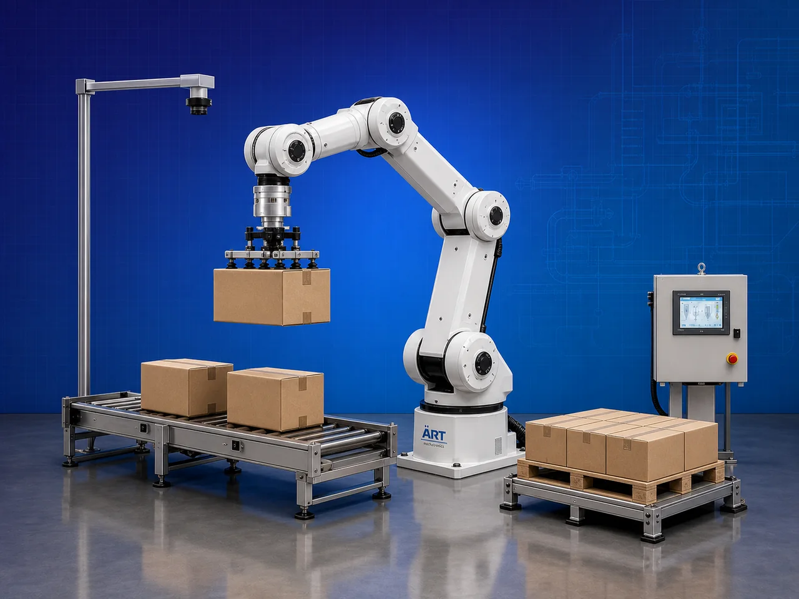

Pick & Place Robot Machine (Industrial Automated Product Handling & Robotic Automation System)
A Pick & Place Robot Machine, also known as a Pick and Place Robotic System or Industrial Pick & Place Robot, is an advanced automation equipment designed for automatic product picking, positioning, sorting, transferring, packaging, assembly, palletizing, and high-speed material handling operations using robotic arm technology and intelligent automation systems.

About the Pick & Place Robot
Pick & place robotic systems are widely used for:
- Automated product handling
- Packaging line automation
- Material transfer operations
- Sorting and positioning systems
- Assembly line automation
- Smart factory automation
The machine improves:
- Production speed
- Automation accuracy
- Labor reduction
- Product handling consistency
- Operational safety
- Industrial productivity
The robotic system combines:
- Multi-axis robotic arms
- Servo-controlled movement systems
- Vision and sensor technology
- PLC and HMI automation
- Intelligent gripping mechanisms
to perform repetitive industrial operations with high speed and precision.
Pick & place robot machines are widely used in industries such as:
Food processing industries
Packaging industries
Pharmaceutical industries
Automobile industries
Electronics industries
Manufacturing industries
Warehousing & logistics
E-commerce fulfillment centers
where high-speed automated product handling and smart production systems are essential.
The machine is highly suitable for:
- Product picking and placement
- Packaging automation
- Conveyor line automation
- Product sorting systems
- Assembly operations
- Robotic palletizing
ART Mechatronics offers high-performance pick & place robot machines, engineered for Industry 4.0 automation, intelligent product handling, precision operation, and reliable long-term industrial performance.
Working Principle of Pick & Place Robot Machine
Products moving on conveyor or workstation are detected using:
- Sensors
- Vision cameras
- Barcode systems
- Position detection systems
PLC or robotic controller sends movement instructions to robotic arm
Servo motors move robotic arm precisely across programmed coordinates
Robot picks:
- Boxes
- Bottles
- Pouches
- Food products
- Industrial components
- Pharmaceutical products using: Vacuum grippers Mechanical grippers Magnetic grippers Custom end effectors
Robot places product accurately into: Packaging trays Cartons Conveyors Pallets Assembly fixtures
Robotic system synchronizes with: Conveyors Packaging machines Assembly lines Smart factory systems for continuous industrial operation.
Finished products automatically transferred to next production or packaging stage
Types of Pick & Place Robot Machines
- 1. Delta Pick & Place Robot
Designed for: ✔ High-speed lightweight product handling applications
- 2. SCARA Pick & Place Robot
Suitable for: ✔ Precision assembly and packaging operations
- 3. Cartesian Pick & Place Robot
Used for: ✔ Linear motion industrial automation systems
- 4. Vacuum Pick & Place Robot
Designed for: ✔ Packaging and lightweight product handling applications
- 5. Heavy Duty Pick & Place Robot
Suitable for: ✔ Industrial components and heavy product transfer operations
- 6. Vision Guided Pick & Place Robot
Designed for: ✔ AI and camera-based intelligent product handling systems
Industries Using Pick & Place Robot Machines
📦 Packaging Industry Packaging and carton handling automation systems 🍃 Food Processing Industry Food sorting and packaging automation systems 💊 Pharmaceutical Industry Medicine packaging and product transfer systems 🚗 Automobile Industry Component handling and assembly automation systems 💻 Electronics Industry Precision component placement systems 🏭 Manufacturing Industry Smart production line automation systems 🛒 E-Commerce Industry Parcel sorting and handling automation systems 🚚 Warehousing & Logistics Intelligent product transfer systems
Features & Advantages
- High-speed automated product handling
- Accurate and repeatable robotic operation
- Reduces manual labor and handling errors
- Improves production efficiency and consistency
- Multi-axis robotic movement capability
- Continuous industrial operation
- Smart sensor and vision system integration
- Flexible programming and customization options
- Energy-efficient industrial automation solution
Technical Highlights
Robot Type: Delta robot SCARA robot Cartesian robot Multi-axis robotic arm Gripping System: Vacuum gripper Mechanical gripper Magnetic gripper Control System: PLC automation Servo control systems HMI touchscreen interface Sensor Technology: Vision systems Barcode scanners Proximity sensors Automation: Fully automatic robotic operation
Turnkey Pick & Place Automation Solutions
ART Mechatronics offers: Complete pick & place robotic systems Packaging and assembly automation solutions Conveyor and robotic integration systems Smart factory automation integration Installation & commissioning After-sales service & AMC
Why Choose Art Mechatronics
Expertise in industrial robotics and smart automation systems Customized pick & place robotic solutions for multiple industries High-performance intelligent automation systems Advanced PLC, servo, and robotic integration capability Proven Industry 4.0 automation performance across sectors
Applications
Packaging Facilities Food Processing Plants Pharmaceutical Manufacturing Units Electronics Industries Manufacturing Plants Smart Factory Facilities
Industries that use the Pick & Place Robot
Related Automation & Robotics machines
Get pricing & specs for the Pick & Place Robot
Share the product, target capacity, current process and plant location. These details help our engineers discuss the right machine or line configuration.
One partner, from design to start-up
ART Mechatronics designs, manufactures, installs and commissions your Pick & Place Robot solution with regional presence in India, UAE and Thailand.